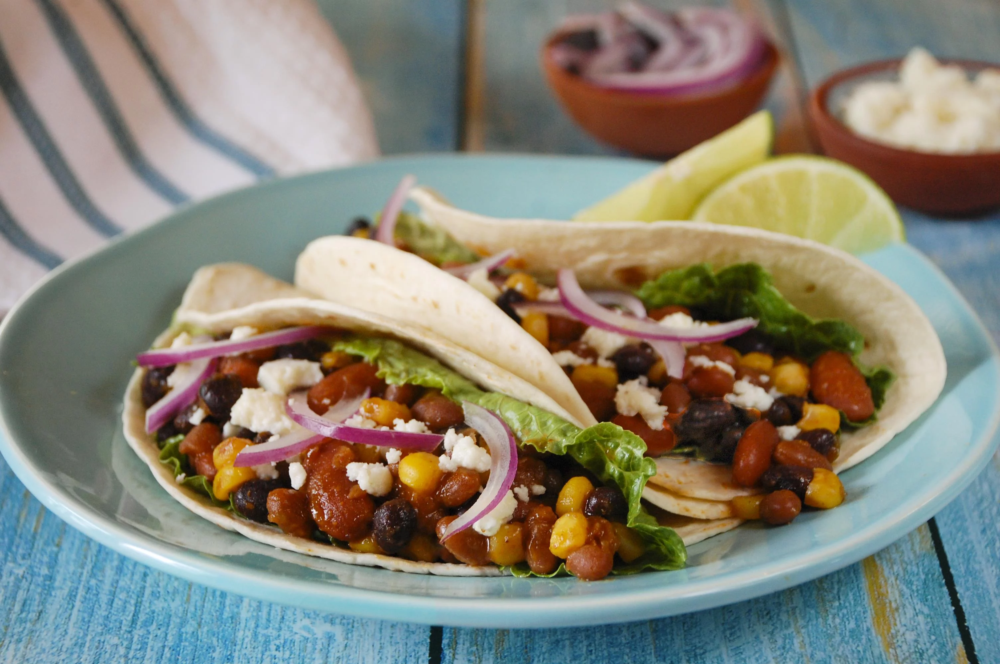

Three Bean Tacos

Lean, mean, and full of beans, these tasty tacos also feature
corn and all of your favorite toppings! A delicious and flavorful
taco night recipe perfect for the whole family.
Ingredients
- 1 (16 ounce) can B&M® Original Baked Beans
- 1 (15.5 ounce) can Joan of Arc® Light Red Kidney Beans, rinsed and drained
- 1 (15 ounce) can Joan of Arc® Black Beans, rinsed and drained
- 1 (11 ounce) can Green Giant® SteamCrisp® Mexicorn®
- 1 (1.25 ounce) package Ortega® Taco Seasoning Mix
- ¾ cup water
- 12 Ortega® flour tortillas, warmed
- Queso fresco, lettuce, and red onion for topping